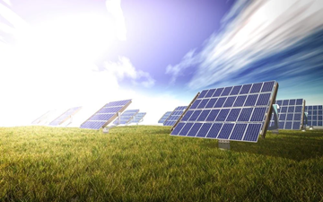

Impacto Ambiental dos Sistemas Fotovoltaicos
Redução de Emissões de CO2
A principal vantagem ambiental da energia solar é que, durante sua operação, ela não gera emissões de gases de efeito estufa, como o dióxido de carbono (CO2), óxidos de nitrogênio (NOx) e dióxido de enxofre (SO2). Ao substituir a energia gerada por fontes fósseis (carvão, petróleo, gás natural), os sistemas fotovoltaicos contribuem diretamente para a redução da pegada de carbono e para o combate ao aquecimento global, ajudando a cumprir metas climáticas internacionais
Ciclo de Vida dos Painéis Solares
É importante considerar o ciclo de vida completo dos painéis solares. Embora a fabricação dos painéis envolva o consumo de energia e a emissão de carbono (principalmente devido à mineração e processamento do silício), estudos mostram que a energia gerada por um painel solar ao longo de sua vida útil compensa essa "energia incorporada" em poucos anos. A operação limpa e prolongada dos sistemas fotovoltaicos garante que o balanço energético e de carbono seja positivo, tornando-os uma opção ambientalmente superior em comparação com as fontes de energia convencionais

Descarte e Reciclagem
O descarte de painéis solares ao final de sua vida útil, que pode ser de 25 a 30 anos, apresenta um desafio crescente. No entanto, a indústria está investindo em soluções. As tecnologias de reciclagem estão evoluindo rapidamente para melhorar o reaproveitamento dos materiais valiosos presentes nos painéis, como silício, alumínio, cobre e prata. Programas de coleta e reciclagem estão sendo implementados em diversos países, visando transformar os painéis descartados em matéria-prima para novos produtos, minimizando o impacto ambiental e promovendo uma economia circular.